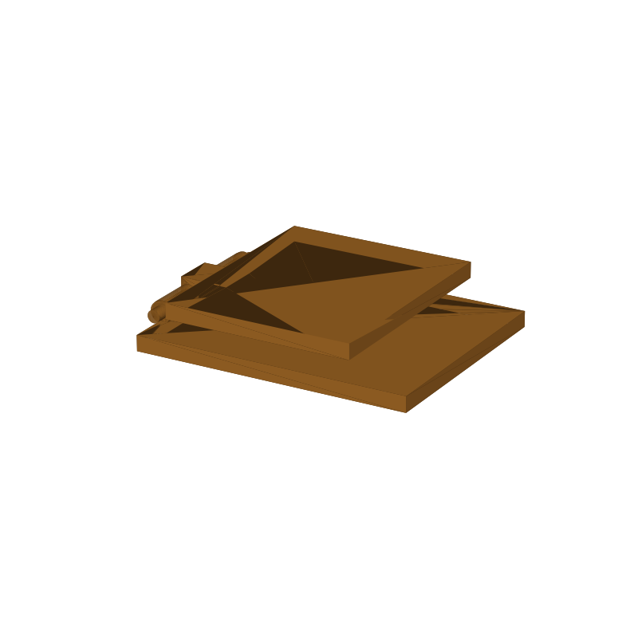

Phone stand STL, fold-flat with a pin hinge
A phone stand that comes off the bed already folded. The panel and the leg print stacked on one plate, the hinge joins them mid-print, and you swing the leg out about 110 degrees to stand it up. The phone's bottom edge sits in the V where the leg meets the panel, so there is no separate lip to snap off. Folded back flat it is a 16.9 mm stack that fits a bag pocket or a drawer.
This page carries the measured spec sheet: dimensions taken from the mesh, the hinge clearances that decide whether the joint actually moves, and preview renders, so you can check the fit against your phone before you slice.

Spec sheet, measured from the mesh
| Spec | Value |
|---|---|
| Folded size | 91.5 × 72.0 × 16.9 mm (as printed, flat stack) |
| Panel | 88 × 72 × 5 mm, takes phones up to about 88 mm deep with a case |
| Leg plate | 60 × 72 × 5 mm, swings out about 110° into an A-frame |
| Hinge | Print-in-place, 4 mm pin molded into the leg knuckle, riding two knuckle tubes on the panel |
| Washers | 6.8 mm discs on both ends of the pin, so the leg cannot walk off |
| Volume | 55.6 cm³, about 58.4 g of PLA |
| Print time | About 2.3 h, PLA, 0.4 nozzle, 0.2 mm layers, no supports |
| Orientation | Prints folded flat on the plate, both parts in one pass |
| Mesh check | Watertight, winding consistent, 2 bodies, 2,968 faces (trimesh 5.1.0, 2026-09-10) |
| Files | STL and 3MF plus a parametric generator script |
| License | Royalty free, no AI training |
How the hinge works
The pin is 4 mm and molded into a solid knuckle on the leg. Two knuckle tubes on the panel ride that pin, and washer discs close off both ends so the leg cannot slide off sideways. Relief notches in the panel face give the washers and the leg knuckle room to pass, which is what lets the stand fold all the way flat.
Print-in-place hinges live and die by clearance. The knobs as generated: pin_clear 0.3 (the panel hole radius is the pin radius plus that) and a 0.9 mm gap between the leg and the knuckle tops. If the hinge comes out fused on your printer, raise pin_clear to 0.4 in the generator (gen_phonestand13.py) and rerun. Every dimension is a parameter there: panel and leg size, thickness, pin, knuckle and washer diameters, clearances.
Print notes
Both parts print flat on the plate in one pass, no supports. The leg lies on top of the panel, 0.4 mm clear of the knuckle tops, so the only thing the printer has to do besides walls is the hinge gap itself. At standard PLA settings the whole thing runs about 2.3 hours.
I have not test-printed this one yet. The geometry is mesh-checked: watertight, winding consistent. Treat the hinge clearance as the knob to tune first, since it decides whether the leg swings at all. If you print it, post a make with your phone model and how stiff the hinge came out.
Where to get the files
A two-piece sibling that separates into base and lean plate, with blind slots for 65° and 75° viewing angles, is staged in the MakerWorld review queue and goes public when the review clears. This fold-flat version is staged for a CGTrader listing and goes public when the store account activates.
More printed organizers, with a status table for the whole pool: 3D printed desk organizers and printable tools.
FAQ
What phones fit?
The panel is 88 × 72 mm, so any phone up to about 88 mm deep with its case on. Thinner phones just lean back a little further in the V.
Does it really print in one piece?
Yes, that is the point of the pin hinge. The panel and leg come off the bed already joined at the hinge; you swing the leg out the first time, nothing to glue or snap together.
How long does it take to print?
About 2.3 hours in PLA on a 0.4 mm nozzle at 0.2 mm layers, roughly 58 g of filament, with no supports to clean up.